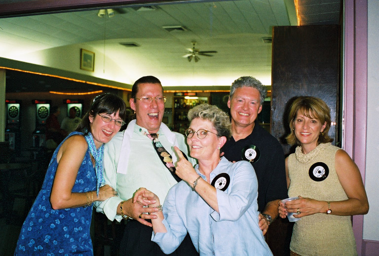

BHS 1967 Class Member
Charles Solheim
 1967 Click for Page Elementary Photo |
Daughter Rachael & me in 2002 |
|  Barb, Chuck, Davi, Kelly & Marci - Reunion 2002 |
| 1967 Click for Page Elementary Photo |
Daughter Rachael & me in 2002 |
|  Barb, Chuck, Davi, Kelly & Marci - Reunion 2002 |
Children: Rachel
Life History: Finally graduated from UNI in 1971. Taught in Pocahontas, IA, then in
Estherville, IA. Moved to work for the AEA in Marshalltown and then for the AEA in
Bettendorf for the past 21 years. I lived in Clinton most of that time. Moved to
Davenport 3 years ago. My job currently is a head consultant for the AEA. After
Linda and I divorced, I remarried and had a daughter - Presently not married.
Update 2014:
Retired and moved to Eldridge, IA. I am doing some consulting part time, Not really advertising but will accept jobs when schools contact me.
I also do some subbing at the AEA now and then for situation of illness etc. I teach a few online classes
for Morningside College out of Sioux City and supervise some of their graduate students doing their practicum.
2-3 days per week. I am still wondering ,too, what I want to do when I finally grow up. What I may be doing
a few years from now might be a total surprise.
My wife Tina is younger that I am and she has a few more years to work. She teaches at the Community College and likes what she does most of the time.